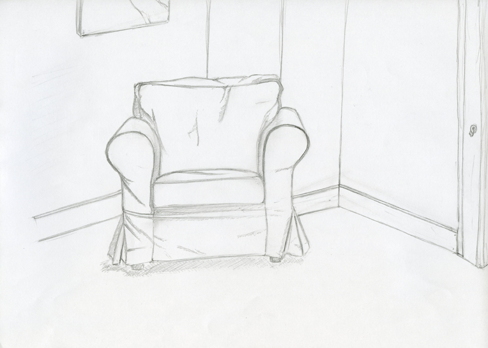
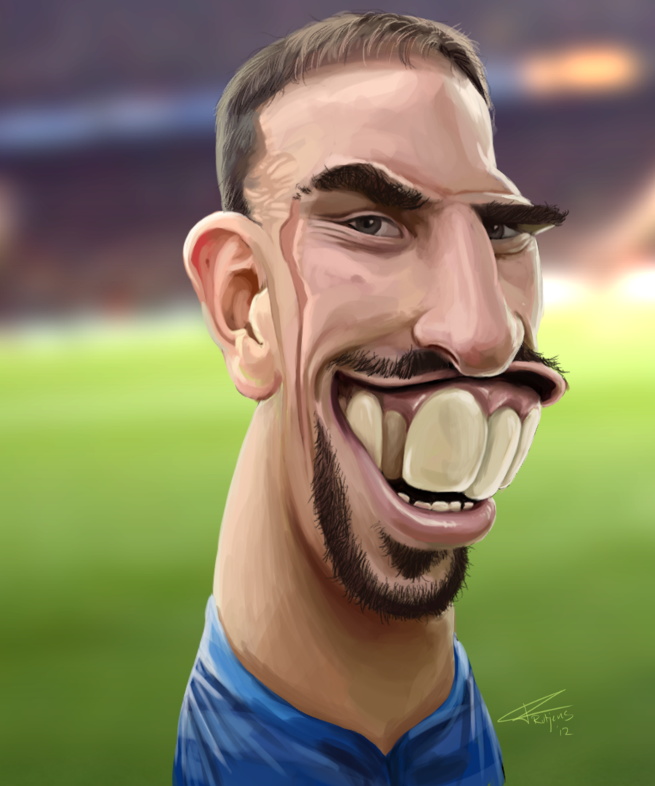
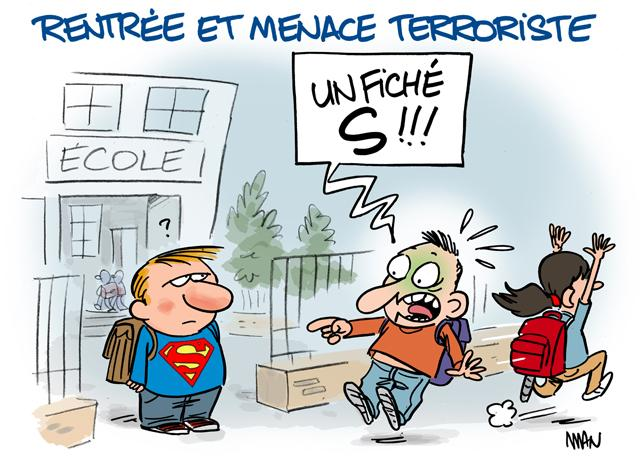
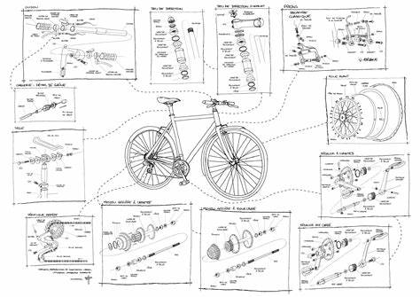

Je nommerai et expliquerai toutes les formes qui s'expriment du dessin.
Le dessin d'observation
Nous commencons par le dessin d'observation, car il est l'une, voir la base la plus importante du dessin.
Si vous voulez commencer le dessin, il est indispensable de commencer par cette forme et de parfaitement la maîtriser !
(Dessin d'observation d'un coin d'une pièce.)
L'utilité du dessin d'observation pour un débutant en plusieurs points:
Il faut pratiquer intensément pour réussir cet exercice, réussir à se concentrer seulement sur l'observation du sujet de dessin, sans modifier et interpréter sur sa feuille.
Cette forme de dessin fera s'exprimer plus facilement le dessinateur à l'avenir, il laissera place à la créativité et à l'imagination quand les bases seront totalement acquises.
La caricature
Après savoir dessiner un portrait à la perfection, on peut facilement faire rire et s'amuser en exagérant les traits du visage et/ou du physique, cela est l'un des moyens les plus importants pour s'exprimer et les plus utilisés en France et dans le monde !
Très controversé et rare à l'époque (même à l'antiquité), il parviendra à se faire une place au fil des siècles.
Quand les caricatures n'étaient pas encore au devant de la scène, elles n'étaient représentées que par quelques estampes et gravures. Les véritables caricatures apparaîtront pendant la Révolution Française.
Le dessin deviendra donc le moyen le plus facile d'accès de critiquer la société, le gouvernement et les abus politiques. Pourquoi facile d'accès ? Eh bien, car tout le monde peut faire un dessin pour se moquer de quelque chose ou simplement pour dessiner, mais aussi car tout le monde peut comprendre un dessin, à contrario aux mots, nous n'avons pas besoin de longuement réfléchir pour comprendre qui est visé et pourquoi.
(Caricature du footballeur Franck Ribéry.)
Comment faire une caricature ?
Cela sera présenté en forme de liste:
(En effet, il faut avoir un bon sens de l'observation pour copier les traits d'une personnalité et éxagerer ses proportions physique)
(Commencer par les traits principaux et réalistes du visage)
(front démesuré, grosses oreilles, nez grossi/pointu ect...)
La caricature n'est pas faite n'importe comment, il faut faire reconnaître la personne du premier coup d'œil. Pour s'entraîner à cela, il faut faire des croquis de plusieurs personnalités connues à partir de photos, cela fera un automatisme au cerveau et le coup de crayon sera amélioré au fur et à mesure.
Le dessin de presse
Il-y-a une grande ressemblance entre le dessin caricatural et le dessin de presse !
En effet, les dessinateurs de ce style sont des adeptes de la caricature.
Comme magazines utilisant le dessin de presse, nous avons les célèbres Charlie Hebdo et le Canard Enchaîné.
Ces magazines s'inspirent de l'actualité et la retranscrit dans des dessins à but humouristique. L'actualité dont ils s'inspirent sont souvent à propos de la religion, de drames mondiales, de faits de société, ou d'abus politique (comme le dessin caricatural).
Le dessin de presse a pour but de faire réagir le lecteur, de lui faire se poser des questions ou même de se remettre en question. C'est pour cette raison que le journaliste utilise l'humour noir, les préjugés ou encore la provocation pour faire parler de lui.
(Dessin de presse après l'attentat sur Charlie Hebdo.)
Le dessinateur de presse est nommé journaliste car il fait avant tout de l'analyse. Au lieu de rédiger son article qu'avec des mots et des phrases, il le rédige avec un dessin.
Tout ces faits énumérés plus haut, sont la preuve que le dessin de presse n'est pas à être analysé sérieusement, il ne faut pas relayer le dessin mais l'actualité montrée par le dessin.
Le dessin technique
Le dessin technique, est une forme de dessin qui va à l'encontre du dessin créatif et immaginatif. Étant l'un des éléments les plus importants dans l'ingénierie, il consiste à représenter un projet ou un produit en premier temps par le biais du dessin.
Il peut y avoir plusieurs types de produits/projets créés par ce type de dessin:
(Comme un bâtiment résidentiel)
La précision est le mot principal défini pour ce type de dessin.
(Dessin technique sur les pièces d'un vélo)
Le dessinateur projeteur est appelé avant la production d'une pièce spécifique. Il doit regrouper toutes les informations utiles et importantes de la pièce (montrer la pièce dans tout les angles, des plans de coupes ect...).
Ce style de dessin doit être présent dans tout les projets menés par des professionnels, c'est pour cela que ce domaine est très normé.
Il-y-a plusieurs critères à respecter pour chaque dessinateur dans ce domaine, les voici:
Mais il n'y a pas que le dessinateur projeteur qui maîtrise ce type de dessin, nous avons aussi le dessinateur scientifique, qui donne vie à travers le dessin les animaux disparus de nos jours. La différence entre le dessinateur projeteur et le dessinateur scientifique est que ce dernier peut imaginer et créer comme il le souhaite.
Voilà une vidéo qui illustre parfaitement le sujet, Charlène Letenneur, une dessinatrice scientifique explique son métier: